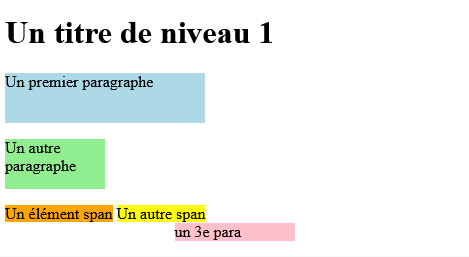
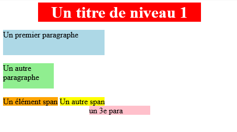
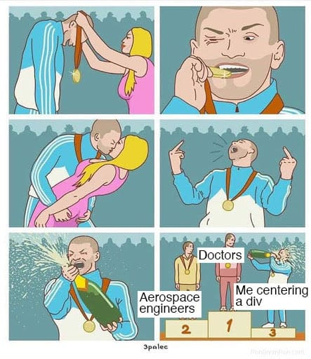

Leçon 1
Lis les articles suivants :
Lis les articles suivants :
Lis les articles suivants sur les concepts de :
Les navigateurs (Firefox, Chrome, Safari, etc.) feront de leur mieux pour rendre une page web HTML, même s'il y a des erreurs dans le code. C'est l'une des grandes différences entre un langage de balisage et un langage de programmation.
Ainsi, les validateurs HTML et CSS sont incontournables pour s'assurer que le code est valide puisque le navigateur va ignorer ces erreurs.
Les erreurs soulignées par les validateurs sont généralement assez descriptives, mais certaines pourraient être difficiles à comprendre. Alors, il y a une section solutions aux erreurs trouvées par le validateur dans les ressources pour vous aider.
Pour qu'une page soit valide, il faut inclure certaines balises avec certains attributs.
<!DOCTYPE html>
<html lang="fr" dir="ltr">
<head>
<meta charset="utf-8">
<meta name="viewport" content="width=device-width, initial-scale=1">
<title></title>
</head>
<body>
</body>
</html>
Nous allons apprendre les concepts suivants :
- espace insécable, très utile en français pour les guillemets et les unités, 10 km/h, 73,25 $ etc.  - demi-espace, utile en français pour après les ? et !Lis les articles suivants.
Nous allons approfondir notre compréhension des hyperliens :
Lis les articles suivants.
Nous allons apprendre les concepts suivants :
Lis les articles suivants.
Pour éviter des bogues et du comportement non voulu, il est important de respecter les règles suivantes lorsqu'on nomme les fichiers.
| Symbole | Description (français) | Description (anglais) | Nom d’entité | Nombre d’entité |
| espace insécable | non-breaking space | |   | |
| < | signe inférieur à | less than | < | < |
| > | signe supérieur à | greater than | > | > |
| & | perluète | ampersand | & | & |
| " | guillemet anglais double | double quotation mark | " | " |
| ' | apostrophe | single quotation mark (apostrophe) | ' | ' |
| ¢ | cenne | cent | ¢ | ¢ |
| £ | livre (britannique) | pound | £ | £ |
| ¥ | yen | yen | ¥ | ¥ |
| € | euro | euro | € | € |
| © | droit d’auteur | copyright | © | © |
| ® | symbole de marque déposée | registered trademark | ® | ® |
Cette leçon introduit le CSS. Nous allons apprendre les concepts suivants :
Lis les articles suivants.
Lis les articles suivants :
Lis les articles suivants :
Voici un exemple de ressource utile pour générer une palette (de couleurs). Note que ce n'est pas la seule qui existe. Il y a des centaines sur l'internet. Pour l'utiliser :
Lis les articles suivants :
Fais les niveaux 9 à 14 dans le CSS Diner.
Lis les articles suivants :
Fais les exercices suivants :
Fais les niveaux 9 à 14 dans le CSS Diner.
Lis les articles suivants et fais les exercices associés (dont les liens se trouvent en bas):
Fais les exercices suivants :
Fais les exercices suivants :
Lis les articles suivants :
Voici la leçon de référence.

Les concepts inline et block
See the Pen Cours HTML CSS 5.2.1 by Pierre (@pierregiraud) on CodePen.
Essaie de répliquer l'image suivante et modifiant le code ci-haut.
See the Pen Largeur, hauteur et les problèmes de dépassement - solution 1 by o (@snufflufikist) on CodePen.
Pour centrer un élément (de type block), on peut simplement assigner margin: auto;
Essaie maintenant de répliquer l'image suivante.

h1 {
background-color: red;
width: 75%;
color: white;
margin: auto;
text-align: center;
}
">
Lis cet article au complet pour apprendre des problèmes de dépassement. N'oublie pas de modifier le code dans les CodePen pour bien comprendre les concepts.
Dans cette section, nous allons introduire la sémantique HTML.

<nav>) et une classe (Ex. <div class="nav">)Dans cette leçon, nous allons aborder plusieurs éléments HTML utiles.
Selon Wikipédia :
Un site web réactif est un site web dont la conception vise, grâce à différents principes et techniques, à offrir une consultation confortable sur des écrans de tailles très différentes. L'utilisateur peut ainsi consulter le même site web à travers une large gamme d'appareils (moniteurs d'ordinateur, smartphone, tablettes, télévision…) avec le même confort visuel et sans avoir recours au défilement horizontal ou au zoom avant/arrière sur les appareils tactiles notamment, manipulations qui peuvent parfois dégrader l'expérience utilisateur, tant en lecture qu'en navigation.

Article SMNArnold sur les viewports.
Le code suivant inséré dans votre section head servira bien dans la majorité des cas :
<meta name="viewport" content="width=device-width, initial-scale=1">
Un bon point de départ est d'utiliser les breakpoints suivants :

Articles et exercices sur Flexbox :
Articles et exercices sur Grid :
See the Pen Untitled by o (@snufflufikist) on CodePen.
Pour voir la liste de raccourcis clavier dans Atom, faire > et ensuite selectionner .
Un conseil directement des développeurs d'Emmet :
You don’t really need to write complex abbreviations... You’ll quickly find out that constructing a single complex abbreviation is much slower and error-prone than constructing and typing a few short ones.
Le validateur html est incontournable pour trouver certaines erreurs dans le code html, mais il n’est pas toujours évident ce que veut dire les messages d’erreur. Voici une liste d’erreurs communes et leur solution.
iframe {
border-width: 0px;
}